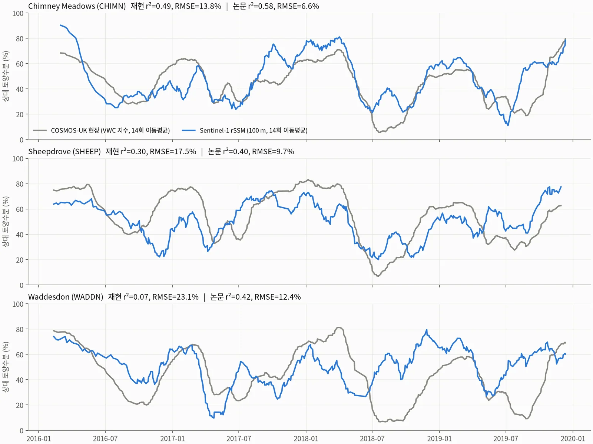
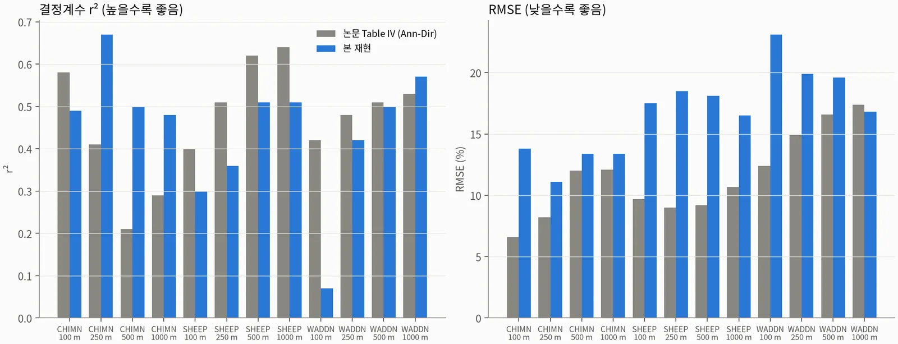
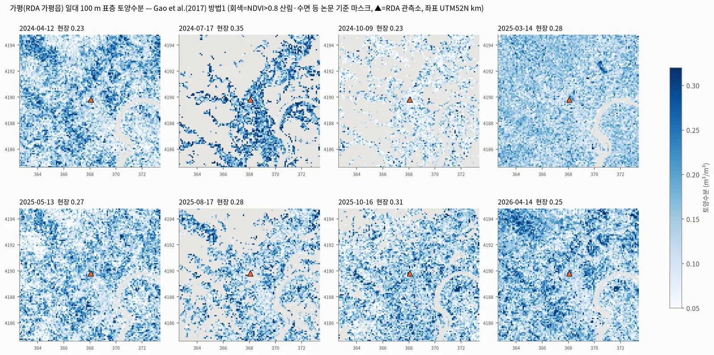
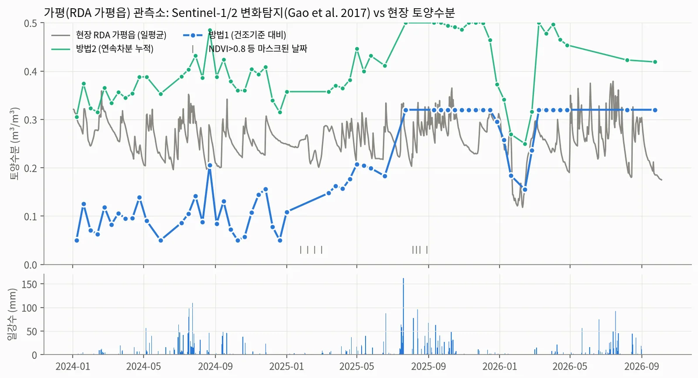
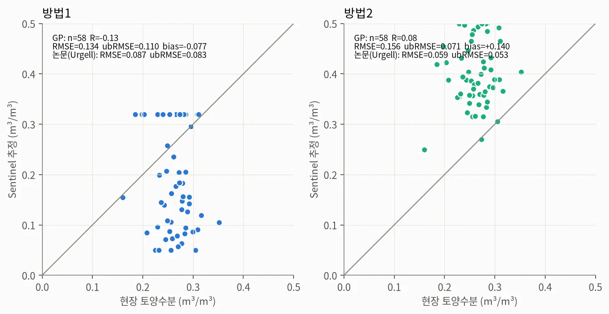
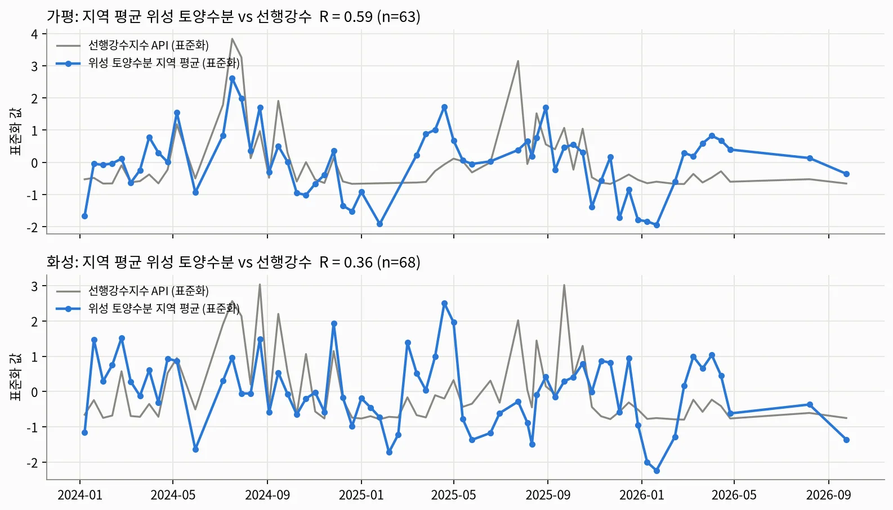
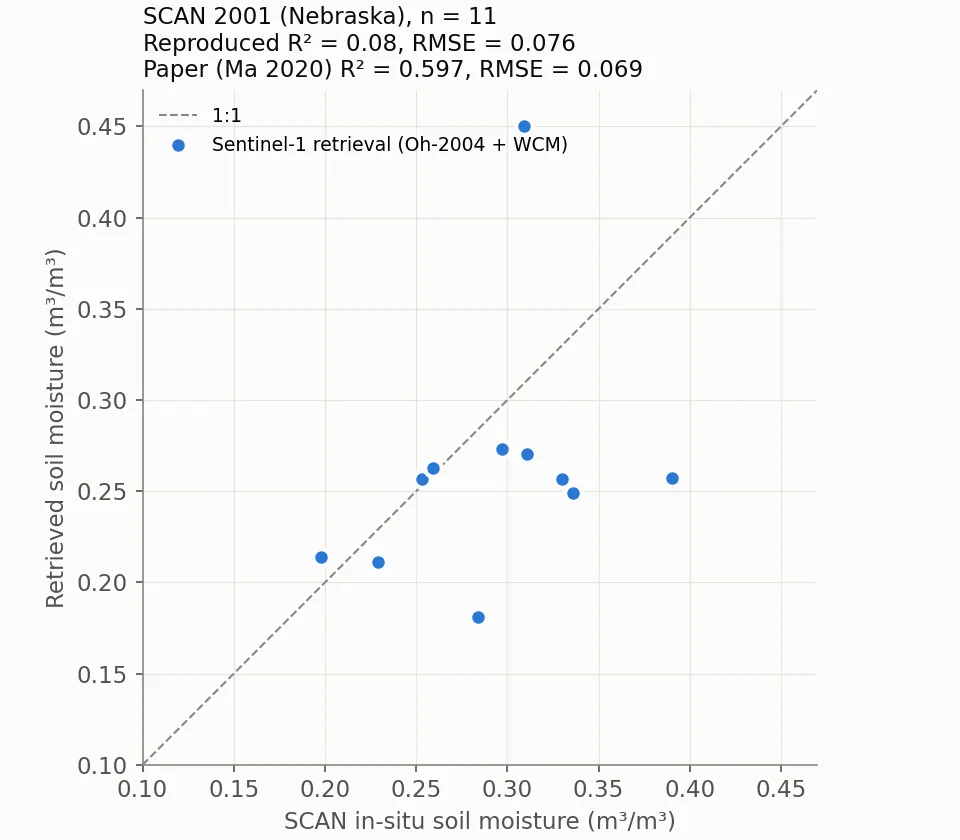
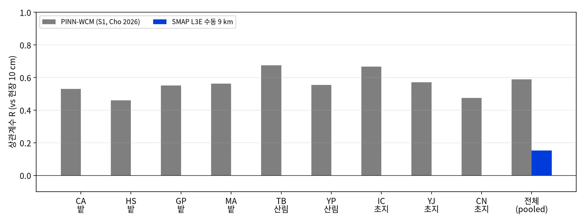

Sentinel-1 토양수분 산출 — 논문 3편 재현·검증Sentinel-1 Soil Moisture Retrieval: Reproducing and Validating Three Published Methods
무료 위성자료(Sentinel-1·2, SMAP)만으로 표층 토양수분을 산출하고, 공개 논문 3편의 방법을 그대로 적용해 현장관측과 비교함. 영국에서는 상관 수준(r² 평균 0.45 vs 논문 0.47)을 재현했지만 절대오차는 재현하지 못함. 미국 SCAN 재현과 국내 관측소 1점 비교는 실패했고, 실패 기록도 그대로 남겼음.Retrieved surface soil moisture from free satellite data only (Sentinel-1/2, SMAP) by applying three published methods unchanged and comparing against in-situ networks. In the UK, correlation levels were reproduced (mean r² 0.45 vs 0.47 in the paper) but absolute errors were not. The US SCAN reproduction and Korean single-station comparisons failed; those failures are documented as-is.
배경 · 목표Background
- 조건: 유료 영상 없이 무료 위성자료만 사용하고, 검증된 최신 문헌의 자료·방법을 수정 없이 적용함.
- C-band SAR 후방산란은 표층(약 0–5 cm) 수분에 민감함. 반면 식생, 거칠기, 스페클이 같은 크기의 신호를 만들기 때문에 현장값과 직접 맞추기가 어려움.
- 공개 논문의 수치가 다른 지역과 자료 경로에서도 재현되는지 확인하는 것을 1차 목표로 잡았음.
- Constraint: free satellite data only, and published methods applied without modification.
- C-band backscatter is sensitive to the top ~0–5 cm of soil, but vegetation, roughness and speckle produce signals of similar magnitude, which makes direct agreement with in-situ sensors hard.
- The primary goal was to test whether published accuracy figures hold up under an independent data path and in other regions.
방법Method
- 영국(Maslanka 2022, TU Wien 변화탐지): Planetary Computer Sentinel-1 RTC에서 관측소 주변 3.2 km 창만 원격으로 읽었음. 2016–2019 상승궤도 30·132, 410장임.
- 영국 처리: 화소별 β(궤도 간 σ0 차/입사각 차, 중앙값 −0.092 dB/°)로 40° 정규화함. 10 m를 100/250/500/1000 m로 선형 평균하고, 건조·습윤 기준(P10·P90 ± 범위/8)으로 상대 토양수분 rSSM(0–100 %)을 계산함.
- 영국 검증: COSMOS-UK 3개소(CHIMN·SHEEP·WADDN) 중성자 센서 VWC를 지수화하고, 양쪽에 14회 이동평균을 적용한 뒤 r²·RMSE를 논문 Table IV와 12조합 모두 대조함.
- 미국(Ma 2020): SCAN 2001 관측소에서 Oh-2004 표면산란 + Water Cloud Model(식생수분 = S2 NDWI 식)을 격자탐색으로 역산함.
- 국내(Gao 2017): ASF S1 GRD(가평 66장, 화성 70장)를 SNAP으로 σ0·지형보정하고 S2 NDVI 100 m와 함께 방법1(NDVI 등급별 건조 기준)·방법2(시간차분)를 적용함. 농촌진흥청 10 cm 관측소와 비교함.
- 보조 검증: 관측소 한 점 대신 지도 전체 평균과 선행강수지수(API, k=0.8)의 상관을 봤음.
- 하위 시도: Cho 2026(Zenodo, 비심사) PINN-WCM 재구현과 관측소 제외(LOSO) 교차검증, SMAP L3E 9 km 수동형 vs RDA 9개소 비교.
- 시각화: 텔레픽스 SatCHAT 화면에 Esri 위성지도와 rSSM 레이어를 얹은 시연용 합성 이미지를 만들었음. 수면 위치 IoU로 지도 정합을 확인함.
- UK (Maslanka 2022, TU Wien change detection): read only a 3.2 km window around each station from the Planetary Computer Sentinel-1 RTC collection, covering ascending tracks 30 and 132 for 2016–2019 (410 scenes).
- UK processing: normalised backscatter to 40° with a per-pixel slope β (inter-track σ0 difference over incidence difference, median −0.092 dB/°), averaged 10 m pixels linearly to 100/250/500/1000 m, and scaled each cell between dry and wet references (P10/P90 ± range/8) to relative soil moisture (rSSM, 0–100 %).
- UK validation: indexed COSMOS-UK cosmic-ray VWC at three sites (CHIMN, SHEEP, WADDN), applied a 14-acquisition moving average to both series, and compared r² and RMSE with all 12 combinations in the paper's Table IV.
- US (Ma 2020): inverted the Oh-2004 surface model plus the Water Cloud Model (vegetation water content from Sentinel-2 NDWI) at a SCAN station with a grid search.
- Korea (Gao 2017): calibrated and terrain-corrected Sentinel-1 GRD in SNAP (66 scenes at Gapyeong, 70 at Hwaseong), combined them with 100 m Sentinel-2 NDVI, applied method 1 (NDVI-class dry reference) and method 2 (temporal difference), and compared with 10 cm stations of the Rural Development Administration (RDA).
- Auxiliary check: correlated the scene-mean soil moisture with an antecedent precipitation index (API, k = 0.8) rather than with a single station.
- Side studies: re-implemented the Cho 2026 PINN-WCM (Zenodo, not peer-reviewed) and tested it with leave-one-site-out (LOSO) validation; compared SMAP L3E 9 km passive soil moisture with nine RDA stations.
- Visualisation: built demo composites that overlay rSSM on Esri imagery inside a Telepix SatCHAT screen, and checked map registration with water-body IoU.
결과Results
- 영국 r²: 12조합 평균 0.45(논문 0.47)이고, 5개 조합이 논문과 ±0.10 이내였음. 최고 조합은 CHIMN 250 m r² 0.67(논문 0.41)임. 같은 조합의 일 단위(이동평균 없음) r²는 0.36임.
- 영국 RMSE: 재현 11.1–23.1 %, 논문 6.6–17.4 %로 12개 중 1개만 근접함. 현장 지수 기간이나 셀 위치를 바꿔도 격차가 유지돼 원인을 확정하지 못함.
- 영국 겨울(2017-12-26)–여름 가뭄(2018-07-18): 영역 평균 rSSM이 86.9 %에서 39.4 %로 떨어졌음. 전체 1,024셀 중 91 %가 감소했고 74 %는 30 pp 넘게 감소함. 같은 기간 현장 VWC는 40.1 %에서 18.5 %로 내려갔음.
- 미국 SCAN: 재현 실패(R² 0.08 vs 논문 0.597, RMSE 0.076 vs 0.069, n 11 vs 14).
- 국내 관측소 1점: 실패. 방법1 R은 가평 −0.13(ubRMSE 0.110), 화성 −0.14(0.086)로, 현장 평균값을 그대로 쓰는 상수 예측보다 오차가 컸음.
- 국내 지역 평균: 가평 위성 토양수분 지역평균과 선행강수지수의 R은 0.59(n 63), 화성은 0.36이었음. 강수 반응은 지도 단위에서만 보였음.
- PINN-WCM: 저자 공개 R 0.60은 관측소별 학습으로 추정됨. 관측소 제외 검증에서는 RF R 0.07(ubRMSE 0.066)로 상수 기준선(0.064)보다 나빴음.
- SMAP L3E 9 km(예비, n 32): R 0.15, ubRMSE 0.103, bias +0.038 m³/m³. 유효 자료 전부에 품질 '비권장' 플래그가 붙어 있었음.
- 원본 산출물에서 핵심 수치를 다시 계산함. 영국 12조합, CHIMN 250 m 전 과정, 겨울·여름 지도 통계, 미국·국내 지표는 일치함. 문서상 가평 VV 점프 +5.5 dB는 재계산값이 +5.3 dB로 소폭 달랐음.
- 확장 적용: 강원 고랭지 배추밭 경작 면적 변화를 같은 전처리 체인으로 분석함.
- UK r²: mean of 12 combinations 0.45 (paper 0.47), with 5 within ±0.10 of the paper. The best combination was CHIMN 250 m at r² 0.67 (paper 0.41); its day-to-day (unsmoothed) r² was 0.36.
- UK RMSE: 11.1–23.1 % reproduced vs 6.6–17.4 % in the paper, with only 1 of 12 close. The gap persisted when the in-situ index period or cell placement changed, so the cause remains unidentified.
- UK winter (2017-12-26) vs summer drought (2018-07-18): area-mean rSSM fell from 86.9 % to 39.4 %. 91 % of all 1,024 cells became drier and 74 % dropped by more than 30 pp, while in-situ VWC went from 40.1 % to 18.5 %.
- US SCAN: reproduction failed (R² 0.08 vs 0.597; RMSE 0.076 vs 0.069; n 11 vs 14).
- Korean single stations: failed. Method 1 gave R −0.13 at Gapyeong (ubRMSE 0.110) and −0.14 at Hwaseong (0.086), worse than a constant in-situ mean.
- Korean scene means: scene-mean soil moisture correlated with the antecedent precipitation index at R 0.59 at Gapyeong (n 63) and 0.36 at Hwaseong. The rainfall response showed up only at map scale.
- PINN-WCM: the published R 0.60 appears to come from per-station training. Under leave-one-site-out, a random forest reached only R 0.07 (ubRMSE 0.066), worse than a constant baseline (0.064).
- SMAP L3E 9 km (preliminary, n 32): R 0.15, ubRMSE 0.103, bias +0.038 m³/m³. Every valid retrieval carried the 'not recommended' quality flag.
- Key figures were recomputed from the original outputs. The 12 UK combinations, an end-to-end CHIMN 250 m run, the winter/summer map statistics, and the US and Korean metrics all matched. The documented +5.5 dB VV jump at Gapyeong recomputed slightly lower, at +5.3 dB.
- Extension: applied the same preprocessing chain to analyse cultivated-area change in Gangwon highland cabbage fields.












배운 점 · 한계What I learned · Limitations
- 변화탐지 rSSM은 계절 변동(14회 이동평균 r² 0.67)은 잘 따라갔지만 일 단위 일치도는 0.36이었음. 그래서 '계절·가뭄 추세 감시용'으로 한정해 표현해야 함.
- 상관(r²)이 재현돼도 진폭(RMSE)은 재현되지 않을 수 있음. 논문에 적히지 않은 처리 선택(σ0 근사, 필터, 셀 정렬, 이동평균 창)이 RMSE를 1–11 %p 바꿨음.
- 관측소 한 점 검증은 셀 내부 변화에 취약함. 가평 관측소 셀은 2025-06→07에 VV가 +5.3 dB 뛰었는데(주변 1 km는 변화 없음, 구조물 추정) 현장 표준편차는 0.029에 불과함. 화성은 NDVI가 0.06–0.23인 나지라서 논문 마스크(NDVI<0.1)에 대부분 탈락했다(유효 26/70일).
- 깊이 불일치: C-band 감지 깊이는 약 0–5 cm인데 현장 센서는 RDA 10 cm, COSMOS 12–25 cm다.
- 공개된 고성능 수치(R 0.6)는 평가 방식부터 확인해야 함. 관측소별 bias가 거의 0(|bias|<0.008)인 것이 in-sample 평가의 신호였음.
- 한계: 국내에서 관측소 단위 검증은 끝내 성공하지 못함. 미국 재현 실패의 원인(방정식 1개·미지수 2개인 해 곡선, SCE-UA 대신 격자탐색)도 확정하지 못함.
- 한계: SMAP·PINN 하위 작업 폴더가 서버에서 사라져 최종 수치(SMAP 116/429일 R 0.12)는 검증하지 못함. 남은 시험 사본과 공개표로 부분 재계산만 함.
- Change-detection rSSM tracked the seasonal cycle (r² 0.67 after a 14-acquisition moving average) but only reached r² 0.36 day to day, so it should be framed as a seasonal/drought trend monitor.
- Reproducing correlation does not guarantee reproducing amplitude: processing choices the paper leaves unstated (σ0 approximation, speckle filter, cell alignment, moving-window placement) shifted RMSE by 1–11 percentage points.
- Single-station validation is fragile to changes inside the cell. At Gapyeong, VV in the station cell jumped +5.3 dB between June and July 2025 while the surrounding 1 km stayed flat (likely a new structure), and in-situ variability was only 0.029 m³/m³. At Hwaseong the cell is bare ground (NDVI 0.06–0.23), so the paper's NDVI < 0.1 mask removed most dates (26 of 70 valid).
- Depth mismatch: C-band senses roughly 0–5 cm, while the in-situ sensors sit at 10 cm (RDA) and 12–25 cm (COSMOS).
- Check the evaluation protocol before trusting a published R ≈ 0.6: near-zero per-station bias (|bias| < 0.008) was the tell-tale sign of in-sample scoring.
- Limitation: station-level validation in Korea never succeeded, and the cause of the US failure (a one-equation, two-unknown solution curve; grid search instead of SCE-UA) was not pinned down.
- Limitation: the SMAP and PINN working folders are no longer on the server, so their final figures (SMAP R 0.12 over 116/429 days) could not be verified; only partial recomputation from a surviving test copy and the public table was possible.
관련 코드Code
sar/sentinel-1/soil-moisture/passive-microwave/soil-moisture/
저장소는 센서 → 위성 → 기법 순으로 정리돼 있고, 각 폴더에 입력·출력 표가 있음.The repository is organised by sensor, satellite and technique; each folder documents its inputs and outputs.
코드 저장소는 비공개입니다. 열람이 필요하시면 아래 연락처로 알려주시면 접근 권한을 드립니다.The code repository is private. Email me and I will grant you access.
산출물Deliverables
- 영국 3개소 × 4해상도 rSSM 시계열 CSV와 논문 대비 지표표
- 가평·화성 100 m 토양수분 GeoTIFF(방법1·2, 날짜별 66·70장)와 관측소 시계열·검증 지표
- 지역평균–선행강수 상관표, 미국 SCAN 역산 결과
- SatCHAT 합성 이미지(영국 겨울·여름, 국문·영문), 발표자료(국문·영문, 좋은 결과 위주)
- 원본 산출물 대비 핵심 수치 재계산 스크립트 6종
- rSSM time-series CSVs for 3 UK sites × 4 resolutions, plus a metrics table against the paper
- 100 m soil moisture GeoTIFFs for Gapyeong and Hwaseong (methods 1 and 2; 66 and 70 dates), station series and validation metrics
- Scene-mean vs rainfall correlation table and US SCAN inversion results
- SatCHAT demo composites (UK winter/summer, Korean and English) and slide decks in both languages (focused on positive results)
- Six scripts that recompute the key figures from the original outputs
원본 보고서와 발표자료는 사내 자료로 공개하지 않음. 분석 코드는 GitHub에 정리되어 있음.Source reports and decks are internal and not published here. Analysis code is organised on GitHub.